Complete Reference: estimate_concentration_field()
Physics, solvers, and practical tuning
Raredon Laboratory
2026-04-05
Source:vignettes/complete-reference.Rmd
complete-reference.RmdOverview
Spatial transcriptomics data gives us discrete transcript or cell
locations, but many biological processes — ligand gradients, cytokine
fields, metabolite concentrations — are continuous.
estimate_concentration_field() bridges this gap by
computing the steady-state concentration field that a
set of point sources (mRNA transcripts, detected proteins) would produce
under a physically motivated diffusion-clearance model.
The result is a dense concentration map over the tissue, interpolated from point source locations. This can be used to:
- Identify where a signalling molecule is most concentrated
- Compute the concentration seen by each cell
- Create two-gene ratio maps (spatial domains of ligand/receptor balance)
- Visualise how diffusion length affects signal range
The physical model
The function solves the screened Poisson equation (steady-state diffusion-clearance PDE):
| Symbol | Meaning | Parameter |
|---|---|---|
| Steady-state concentration at position x | (what we solve for) | |
| Diffusion coefficient (spatial spread rate) | D |
|
| First-order clearance rate | lambda |
|
| Source density (production rate per unit area) | production_rate |
The key derived quantity is the diffusion length:
sets the characteristic distance over which concentration decays from a point source. It is the single most important parameter to tune. The shape of the field depends only on ; the amplitude scales as .
Practical interpretation: is roughly the radius of influence of a single transcript. At distance from a source, the concentration is negligible. At , concentration is near its maximum.
Shared helpers
# ---- Plotting theme ----
theme_demo <- function(bs = 9.5)
theme_minimal(base_size = bs) +
theme(plot.title = element_text(face = "bold", size = bs + 0.5),
plot.subtitle = element_text(size = bs - 1, color = "grey40",
margin = margin(b = 4)),
panel.grid = element_line(color = "grey94"),
legend.key.width = unit(0.35, "cm"),
legend.title = element_text(size = bs - 1),
legend.text = element_text(size = bs - 1.5),
axis.text = element_text(size = bs - 2))
# ---- Field visualiser ----
plot_field <- function(result, transcripts = NULL,
title = "", subtitle = "",
palette = "magma", log_scale = FALSE,
show_pts = TRUE, show_contours = TRUE, n_contours = 6L,
pt_size = 0.35, pt_alpha = 0.45, pt_color = "#00e5ff",
fill_label = "Conc.", symmetric = FALSE) {
df <- field_to_df(result, inside_only = TRUE)
fill_col <- if (log_scale) { df$fv <- log1p(df$field); "fv" } else "field"
fill_lbl <- if (log_scale) paste0("log1p(", fill_label, ")") else fill_label
p <- ggplot(df, aes(x = x, y = y, fill = .data[[fill_col]])) +
geom_raster(interpolate = TRUE) + coord_equal() +
labs(title = title, subtitle = subtitle, x = "X", y = "Y") +
theme_demo()
if (symmetric) {
lim <- max(abs(df[[fill_col]]), na.rm = TRUE)
p <- p + scale_fill_distiller(palette = "RdBu", limits = c(-lim, lim),
name = fill_lbl, na.value = "transparent")
} else {
p <- p + scale_fill_viridis_c(option = palette, name = fill_lbl,
na.value = "transparent")
}
if (show_contours && any(!is.na(df$field)))
p <- p + geom_contour(aes(z = field), color = "white",
alpha = 0.35, linewidth = 0.25, bins = n_contours)
if (show_pts && !is.null(transcripts))
p <- p + geom_point(data = transcripts, aes(x = x, y = y),
inherit.aes = FALSE, color = pt_color,
size = pt_size, alpha = pt_alpha)
p
}
# ---- Sample points uniformly from inside a mask ----
sample_in_mask <- function(mask_poly, n, max_tries = 20) {
bb <- sf::st_bbox(mask_poly); mu <- sf::st_union(mask_poly)
pts <- data.frame(x = numeric(0), y = numeric(0))
for (i in seq_len(max_tries)) {
if (nrow(pts) >= n) break
cnd <- data.frame(x = runif(n * 8, bb["xmin"], bb["xmax"]),
y = runif(n * 8, bb["ymin"], bb["ymax"]))
ok <- as.logical(sf::st_within(
sf::st_as_sf(cnd, coords = c("x","y")), mu, sparse = FALSE)[, 1L])
pts <- rbind(pts, cnd[ok, ])
}
pts[seq_len(min(n, nrow(pts))), ]
}Function reference
estimate_concentration_field(
mask, # sfc polygon -- output of fit_spatial_mask()
transcript_coords, # data.frame with columns x and y
# Physics
D = 1.0, # diffusion coefficient (arbitrary units)
lambda = 0.1, # first-order clearance rate
diffusion_length = NULL, # override: set L directly
production_rate = 1.0,
# Solver
method = "fd", # "fd" | "green" | "kde"
grid_resolution = 256L, # N x N grid
boundary_condition = "dirichlet", # "dirichlet" | "neumann" (fd only)
fd_solver = "direct", # "direct" | "iterative" (fd only)
# Weighting
weight_col = NULL, # column name for per-transcript weights (e.g. "umi")
# Optional
include_external = FALSE,
normalize = FALSE,
log_transform = FALSE,
clip_negative = TRUE,
n_cores = 1L,
plot = FALSE,
verbose = TRUE
)Return value
| Element | Contents |
|---|---|
field |
N x N matrix; NA outside the mask |
x, y
|
Grid centre coordinates (length N each) |
hx, hy
|
Grid cell width and height |
mask |
N x N logical matrix (TRUE = inside mask) |
sources |
N x N matrix of binned source density |
params |
List of all input parameters |
diagnostics |
Timing, counts, etc. |
Use field_to_df(result) to convert to a tidy data frame
for ggplot2.
Section 1 – Synthetic tissue and transcript layout
A kidney-bean-shaped tissue with two synthetic genes:
- Gene A: focal cluster at upper-left, plus sparse background. High UMI count.
- Gene B: 500 transcripts with a right-biased spatial distribution. Low UMI count.
in_kidney <- function(x, y, oa = 9, ob = 7, ncx = 5, nr = 3.8)
(x/oa)^2 + (y/ob)^2 < 1 & sqrt((x - ncx)^2 + y^2) >= nr
cands <- data.frame(x = runif(18000, -11, 11), y = runif(18000, -9, 9))
tissue_pts <- cands[in_kidney(cands$x, cands$y), ][1:3000, ]
if (requireNamespace("TissueMask", quietly = TRUE)) {
tissue_mask <- TissueMask::fit_spatial_mask(
tissue_pts, method = "raster",
raster_resolution = 256L, raster_sigma = 0.7, raster_threshold = 0.15,
verbose = FALSE)
} else {
pts_sf <- st_as_sf(tissue_pts, coords = c("x","y"))
tissue_mask <- st_convex_hull(st_union(pts_sf))
}
mu_t <- sf::st_union(tissue_mask)
# Gene A: focal cluster at (-4.5, 3.8) + sparse background
tc_A_cl <- data.frame(x = rnorm(350, -4.5, 1.2), y = rnorm(350, 3.8, 0.9))
A_in <- as.logical(sf::st_within(
sf::st_as_sf(tc_A_cl, coords = c("x","y")), mu_t, sparse = FALSE)[, 1L])
tc_A_cl <- tc_A_cl[A_in, ]
tc_A_sc <- sample_in_mask(tissue_mask, 50)
tc_A <- rbind(tc_A_cl, tc_A_sc)
tc_A$umi <- c(rpois(nrow(tc_A_cl), 15), rpois(nrow(tc_A_sc), 2))
# Gene B: right-biased random distribution
tc_B_all <- sample_in_mask(tissue_mask, 2000)
prob_B <- plogis(tc_B_all$x / 3)
tc_B <- tc_B_all[runif(nrow(tc_B_all)) < prob_B, ][1:500, ]
tc_B$umi <- rpois(nrow(tc_B), 5)
tissue_sf <- sf::st_sf(geometry = tissue_mask)
ggplot() +
geom_sf(data = tissue_sf, fill = "grey92", color = "grey60", linewidth = 0.4) +
geom_point(data = tc_A, aes(x = x, y = y, color = "Gene A", size = log1p(umi)),
alpha = 0.6) +
geom_point(data = tc_B, aes(x = x, y = y, color = "Gene B", size = log1p(umi)),
alpha = 0.5) +
scale_color_manual(values = c("Gene A" = "#e74c3c", "Gene B" = "#2980b9"),
name = NULL) +
scale_size_continuous(range = c(0.3, 2.5), name = "log(UMI+1)") +
coord_sf(datum = NA) + theme_demo() +
labs(title = "Section 1: Synthetic kidney-bean tissue",
subtitle = "Gene A: focal upper-left | Gene B: broad right-biased",
x = "X", y = "Y")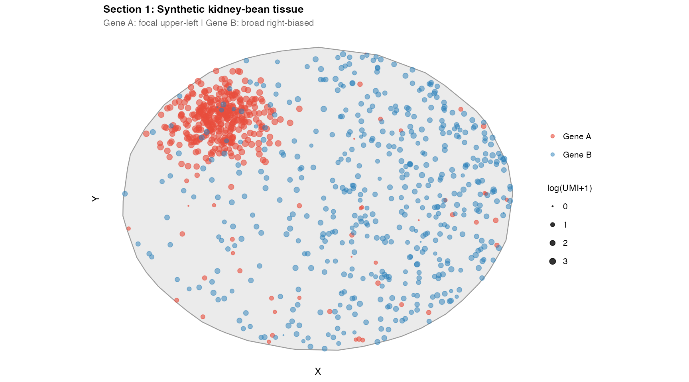
Section 2 – Method comparison: fd, green, kde
pb <- list(D = 1, lambda = 0.3, production_rate = 1,
grid_resolution = 256L, verbose = FALSE)
res_fd <- do.call(estimate_concentration_field,
c(list(mask = tissue_mask, transcript_coords = tc_A,
method = "fd", fd_solver = "direct",
boundary_condition = "dirichlet"), pb))
res_green <- do.call(estimate_concentration_field,
c(list(mask = tissue_mask, transcript_coords = tc_A,
method = "green"), pb))
res_kde <- do.call(estimate_concentration_field,
c(list(mask = tissue_mask, transcript_coords = tc_A,
method = "kde", kde_bandwidth = sqrt(1/0.3)), pb))
res_diff <- res_fd
res_diff$field <- res_fd$field - res_green$field
(plot_field(res_fd, tc_A, title = "2a. fd (Dirichlet)",
subtitle = "Exact BCs; recommended") +
plot_field(res_green, tc_A, title = "2b. green (FFT)",
subtitle = "Infinite domain; no boundary effects")) /
(plot_field(res_kde, tc_A, title = "2c. kde",
subtitle = "Bandwidth = L; phenomenological") +
plot_field(res_diff, title = "2d. fd - green",
subtitle = "fd correctly suppresses near-edge concentration",
symmetric = TRUE, show_contours = FALSE, show_pts = FALSE)) +
plot_annotation(
title = "Section 2: Solver Comparison (Gene A, D=1, lambda=0.3, L ~ 1.83)",
theme = theme(plot.title = element_text(face = "bold", size = 13)))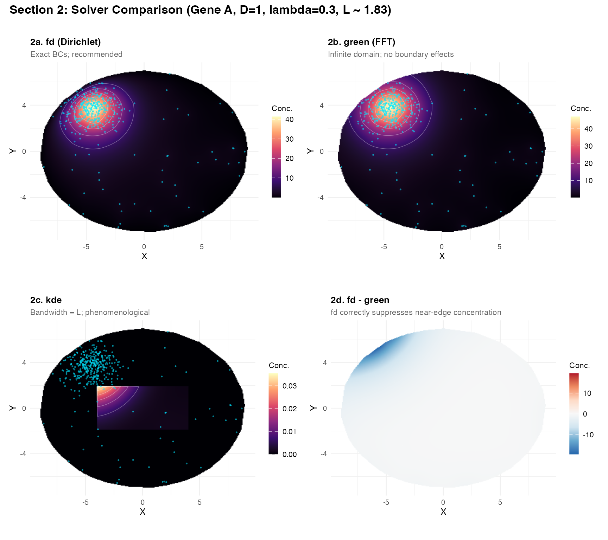
Key observations:
-
fdandgreenagree well in the interior; difference map (2d) showsfdcorrectly zeros concentration at the tissue boundary (Dirichlet), whilegreenleaks outward. -
kdeis visually similar because the bandwidth was set to , but it has no physical interpretation and no boundary conditions.
Section 3 – Diffusion length sweep
The diffusion length is the primary tuning parameter.
L_vals <- c(0.5, 1.5, 4.0, 10.0)
sw3 <- lapply(L_vals, function(Lv) {
res <- estimate_concentration_field(
mask = tissue_mask, transcript_coords = tc_A,
D = 1, diffusion_length = Lv, production_rate = 1,
method = "fd", fd_solver = "direct", grid_resolution = 256L, verbose = FALSE)
f <- res$field
res$field <- (f - min(f, na.rm = TRUE)) / diff(range(f, na.rm = TRUE))
plot_field(res, tc_A,
title = sprintf("L = %.1f", Lv),
subtitle = sprintf("lambda ~ %.3f", 1/Lv^2),
fill_label = "Norm. Conc.", pt_size = 0.4) +
scale_fill_viridis_c(option = "magma", name = "Norm.\nConc.",
limits = c(0, 1), na.value = "transparent")
})
wrap_plots(sw3, nrow = 1) +
plot_annotation(
title = "Section 3: Diffusion Length Sweep (each panel normalised independently)",
subtitle = "Small L: tight peaks | Large L: tissue-wide field",
theme = theme(plot.title = element_text(face = "bold", size = 13),
plot.subtitle = element_text(size = 9, color = "grey40")))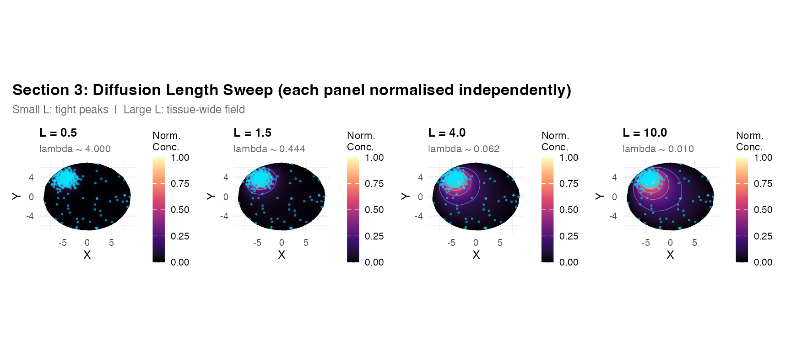
peaks <- sapply(L_vals, function(Lv) {
res <- estimate_concentration_field(
mask = tissue_mask, transcript_coords = tc_A,
D = 1, diffusion_length = Lv,
method = "fd", fd_solver = "direct", grid_resolution = 256L, verbose = FALSE)
max(res$field, na.rm = TRUE)
})
knitr::kable(data.frame(L = L_vals, peak_concentration = round(peaks, 5)))| L | peak_concentration |
|---|---|
| 0.5 | 11.13878 |
| 1.5 | 36.13160 |
| 4.0 | 58.53364 |
| 10.0 | 67.03298 |
How to choose L in practice
- What is the typical inter-cluster distance? should be 10–20% of this distance.
- Are you modelling a small diffusing molecule or a large one? Small molecules have higher and thus larger .
- Does your field look biologically reasonable? Inspect the output and compare to known biology.
Section 4 – Fixed L, varying D and lambda
Field shape depends only on . Changing and while keeping constant produces identical spatial patterns, scaling amplitude as .
DL_cases <- list(
list(D = 0.1, lam = 0.025, label = "D=0.1, lam=0.025"),
list(D = 1, lam = 0.25, label = "D=1, lam=0.25"),
list(D = 5, lam = 1.25, label = "D=5, lam=1.25"),
list(D = 20, lam = 5, label = "D=20, lam=5")
)
dl_pl <- lapply(DL_cases, function(co) {
res <- estimate_concentration_field(
mask = tissue_mask, transcript_coords = tc_A,
D = co$D, lambda = co$lam, production_rate = 1,
method = "fd", fd_solver = "direct", grid_resolution = 256L, verbose = FALSE)
pk <- round(max(res$field, na.rm = TRUE), 5)
plot_field(res, tc_A,
title = co$label,
subtitle = sprintf("L=2 fixed | peak=%.5f", pk),
pt_size = 0.3)
})
wrap_plots(dl_pl, nrow = 1) +
plot_annotation(
title = "Section 4: Fixed L=2, Varying D and lambda",
subtitle = "Shape IDENTICAL (same L). Amplitude proportional to 1/D.",
theme = theme(plot.title = element_text(face = "bold", size = 13),
plot.subtitle = element_text(size = 9, color = "grey40")))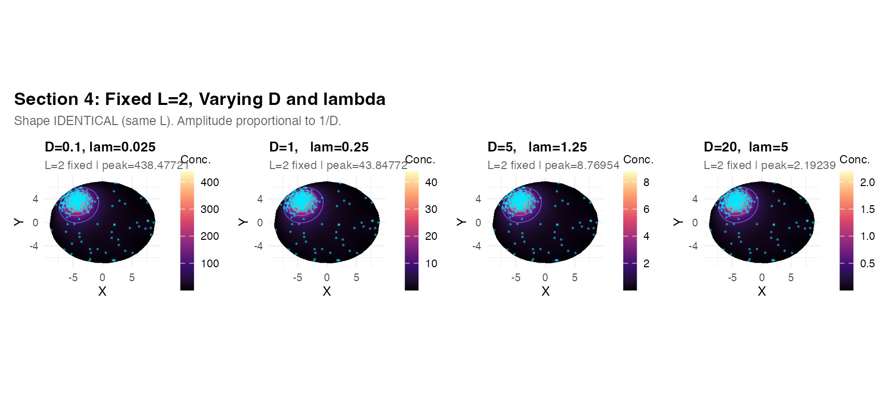
Section 5 – Boundary conditions
res_dir <- estimate_concentration_field(
mask = tissue_mask, transcript_coords = tc_A,
D = 1, lambda = 0.2, method = "fd", fd_solver = "direct",
boundary_condition = "dirichlet", grid_resolution = 256L, verbose = FALSE)
res_neu <- estimate_concentration_field(
mask = tissue_mask, transcript_coords = tc_A,
D = 1, lambda = 0.2, method = "fd", fd_solver = "direct",
boundary_condition = "neumann", grid_resolution = 256L, verbose = FALSE)
res_bcd <- res_dir
res_bcd$field <- res_neu$field - res_dir$field
sl <- function(res, lbl) {
df <- field_to_df(res)
s <- df[abs(df$y) < res$hy * 1.5 & !is.na(df$field), ]
s <- s[order(s$x), ]; s$BC <- lbl; s
}
sl_all <- rbind(sl(res_dir, "Dirichlet"), sl(res_neu, "Neumann"))
p5d <- ggplot(sl_all, aes(x = x, y = field, color = BC)) +
geom_line(linewidth = 0.8) +
scale_color_manual(values = c("Dirichlet" = "#e74c3c", "Neumann" = "#2980b9")) +
labs(title = "5d. Cross-section at y = 0",
subtitle = "Dirichlet drops to 0; Neumann stays elevated",
x = "X", y = "Conc.", color = "BC") +
theme_demo()
(plot_field(res_dir, tc_A,
title = "5a. Dirichlet (C=0 at boundary)",
subtitle = "D=1, lambda=0.2, L ~ 2.24") +
plot_field(res_neu, tc_A,
title = "5b. Neumann (dC/dn=0)",
subtitle = "Molecules reflected; higher near edges",
palette = "plasma")) /
(plot_field(res_bcd,
title = "5c. Neumann - Dirichlet",
subtitle = "Neumann retains more concentration near boundary",
symmetric = TRUE, show_contours = FALSE, show_pts = FALSE) +
p5d) +
plot_annotation(
title = "Section 5: Boundary Condition Comparison",
theme = theme(plot.title = element_text(face = "bold", size = 13)))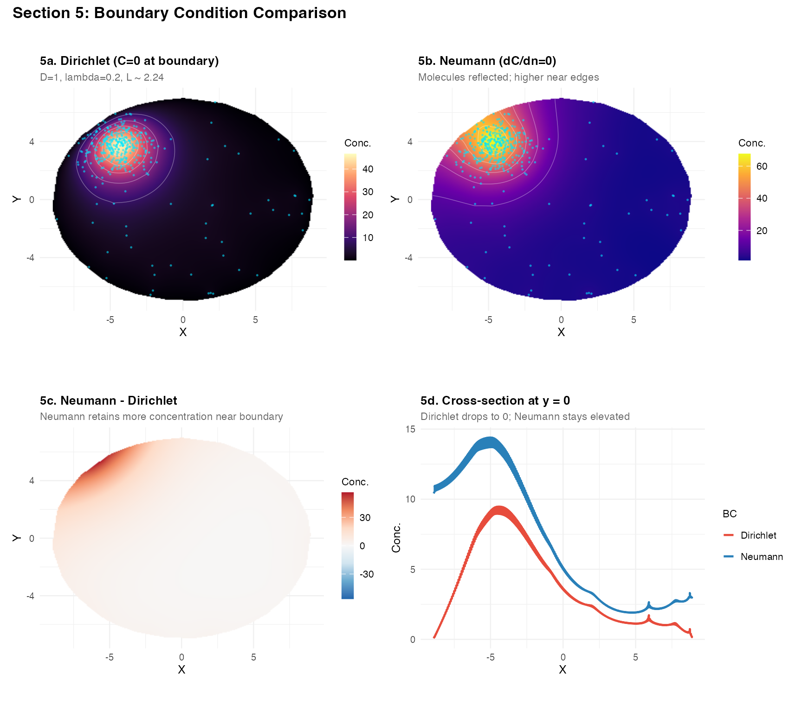
Recommendation: Use "dirichlet" for
tissue sections. Neumann BCs are mainly useful when comparing to
analytic solutions or modelling sealed compartments.
Section 6 – UMI weighting vs. equal weighting
res_uw <- estimate_concentration_field(
mask = tissue_mask, transcript_coords = tc_A,
D = 1, lambda = 0.3, method = "fd", fd_solver = "direct",
grid_resolution = 256L, weight_col = NULL, verbose = FALSE)
res_wt <- estimate_concentration_field(
mask = tissue_mask, transcript_coords = tc_A,
D = 1, lambda = 0.3, method = "fd", fd_solver = "direct",
grid_resolution = 256L, weight_col = "umi", verbose = FALSE)
nrm <- function(r) {
f <- r$field
r$field <- (f - min(f, na.rm = TRUE)) / diff(range(f, na.rm = TRUE))
r
}
plot_field(nrm(res_uw), tc_A,
title = "6a. Unweighted",
subtitle = "All transcripts equal weight",
fill_label = "Norm. Conc.") +
plot_field(nrm(res_wt), tc_A,
title = "6b. UMI-weighted",
subtitle = "High-UMI cluster source amplified",
palette = "plasma",
fill_label = "Norm. Conc.") +
plot_annotation(
title = "Section 6: UMI Weighting",
theme = theme(plot.title = element_text(face = "bold", size = 13)))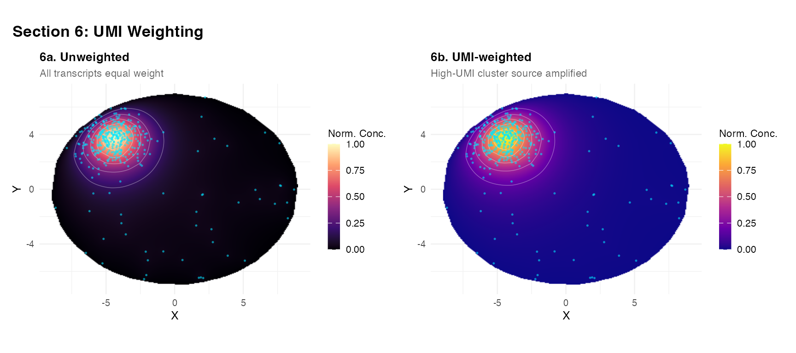
Section 7 – External transcripts
include_external = TRUE includes transcripts outside the
mask as sources, useful when transcripts fall just outside the fitted
mask boundary.
tc_ext <- data.frame(x = rnorm(80, 6.5, 0.4),
y = rnorm(80, 0, 0.5),
umi = rpois(80, 10))
ext_in <- as.logical(sf::st_within(
sf::st_as_sf(tc_ext, coords = c("x","y")), mu_t, sparse = FALSE)[, 1L])
tc_ext <- tc_ext[!ext_in, ]
tc_Ax <- rbind(tc_A, tc_ext)
res_ne <- estimate_concentration_field(
mask = tissue_mask, transcript_coords = tc_Ax,
D = 1, lambda = 0.15, method = "fd", fd_solver = "direct",
grid_resolution = 256L, include_external = FALSE, verbose = FALSE)
res_we <- estimate_concentration_field(
mask = tissue_mask, transcript_coords = tc_Ax,
D = 1, lambda = 0.15, method = "fd", fd_solver = "direct",
grid_resolution = 256L, include_external = TRUE, verbose = FALSE)
ext_pt_layer <- geom_point(data = tc_ext, aes(x = x, y = y),
color = "orange", size = 0.9, alpha = 0.8,
inherit.aes = FALSE)
(plot_field(res_ne, tc_A, title = "7a. include_external = FALSE") +
ext_pt_layer) +
(plot_field(res_we, tc_A, title = "7b. include_external = TRUE",
palette = "plasma") +
ext_pt_layer) +
plot_annotation(
title = "Section 7: External Transcripts (orange = outside mask)",
theme = theme(plot.title = element_text(face = "bold", size = 13)))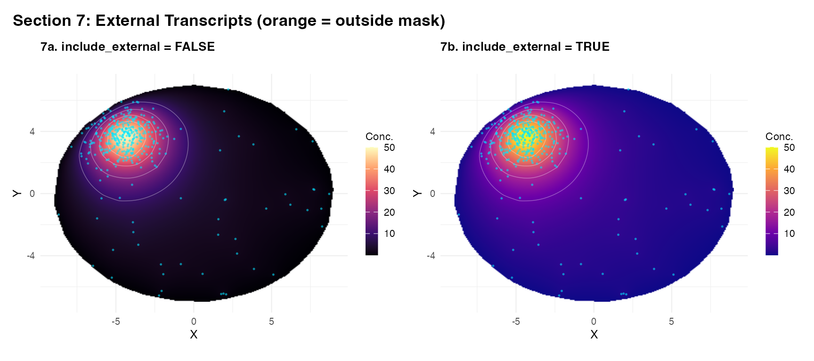
Section 8 – Holey mask: vascular clearance
A key strength of method = "fd" is correct handling of
holes (vessel lumens) in the mask. The green method ignores
topology.
vd <- list(list(cx = -2, cy = 1.5, r = 1.2),
list(cx = 2.5, cy = -2, r = 1.0),
list(cx = -4.5, cy = -2.5, r = 0.8))
in_v <- function(x, y) Reduce(`|`, lapply(vd, function(v)
sqrt((x - v$cx)^2 + (y - v$cy)^2) < v$r))
n_h <- 3000
cnd_h <- data.frame(x = runif(n_h * 8, -11, 11),
y = runif(n_h * 8, -9, 9))
kp_h <- in_kidney(cnd_h$x, cnd_h$y) & !in_v(cnd_h$x, cnd_h$y)
pts_h <- cnd_h[kp_h, ][1:n_h, ]
if (requireNamespace("TissueMask", quietly = TRUE)) {
holey_mask <- TissueMask::fit_spatial_mask(
pts_h, method = "raster",
raster_resolution = 256L, raster_sigma = 0.4,
raster_threshold = 0.2, verbose = FALSE)
} else {
pts_hf <- st_as_sf(pts_h, coords = c("x","y"))
holey_mask <- st_convex_hull(st_union(pts_hf))
}
tc_h <- sample_in_mask(holey_mask, 400)
res_hfd <- estimate_concentration_field(
mask = holey_mask, transcript_coords = tc_h,
D = 1, lambda = 0.15, method = "fd", fd_solver = "direct",
grid_resolution = 256L, verbose = FALSE)
res_htight <- estimate_concentration_field(
mask = holey_mask, transcript_coords = tc_h,
D = 1, lambda = 1.0, method = "fd", fd_solver = "direct",
grid_resolution = 256L, verbose = FALSE)
res_hgrn <- estimate_concentration_field(
mask = holey_mask, transcript_coords = tc_h,
D = 1, lambda = 0.15, method = "green",
grid_resolution = 256L, verbose = FALSE)
res_hdiff <- res_hfd
res_hdiff$field <- res_hfd$field - res_hgrn$field
(plot_field(res_hfd, tc_h,
title = "8a. fd | L ~ 2.58",
subtitle = "Vessel lumens correctly zeroed",
pt_size = 0.3) +
plot_field(res_htight, tc_h,
title = "8b. fd | L = 1 (tight)",
subtitle = "Steeper depletion near vessels",
palette = "inferno", pt_size = 0.3)) /
(plot_field(res_hgrn, tc_h,
title = "8c. green -- topology blind",
subtitle = "FFT ignores holes entirely",
palette = "plasma", pt_size = 0.3) +
plot_field(res_hdiff,
title = "8d. fd - green",
subtitle = "fd zeros lumens; green does not",
symmetric = TRUE, show_contours = FALSE, show_pts = FALSE)) +
plot_annotation(
title = "Section 8: Holey Mask -- Vascular Clearance",
subtitle = "Use method='fd' whenever the mask has holes",
theme = theme(plot.title = element_text(face = "bold", size = 13),
plot.subtitle = element_text(size = 9, color = "grey40")))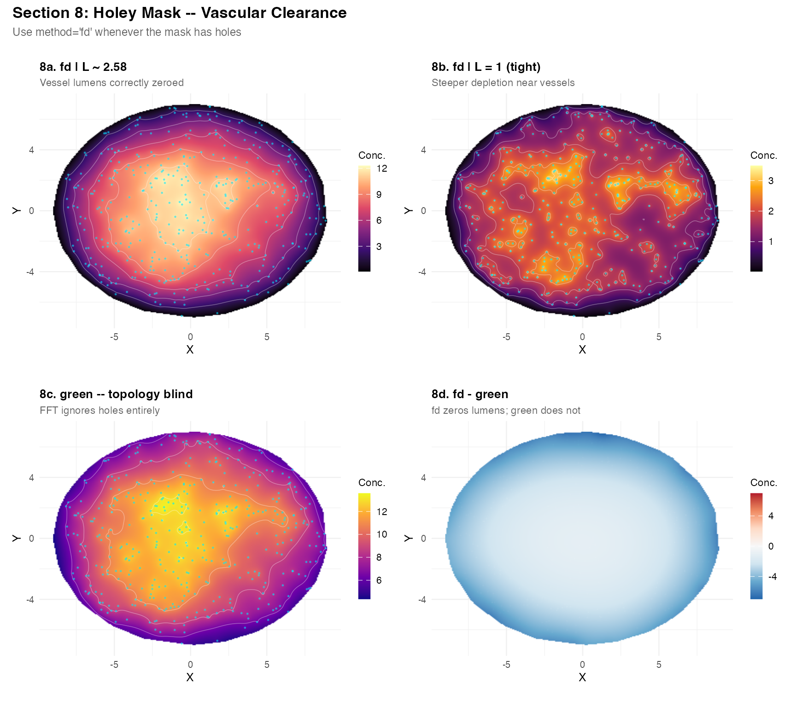
Important: If your tissue mask has holes (vessel lumens, necrotic cores), always use
method = "fd". Thegreenandkdemethods are unaware of domain topology.
Section 9 – Wide dynamic range and log-scale visualisation
When transcript counts span several orders of magnitude, use
log_scale = TRUE in plot_field() or
log_transform = TRUE in the solver call to reveal
background structure.
tc_w <- rbind(
data.frame(x = rnorm(20, -5, 0.3), y = rnorm(20, 4, 0.3), umi = rpois(20, 200)),
data.frame(x = rnorm(300, 0, 4), y = rnorm(300, 0, 3), umi = rpois(300, 1)))
tc_w_in <- as.logical(sf::st_within(
sf::st_as_sf(tc_w[, c("x","y")], coords = c("x","y")),
mu_t, sparse = FALSE)[, 1L])
tc_w <- tc_w[tc_w_in, ]
res_w <- estimate_concentration_field(
mask = tissue_mask, transcript_coords = tc_w,
D = 1, lambda = 0.5, method = "fd", fd_solver = "direct",
grid_resolution = 256L, weight_col = "umi", verbose = FALSE)
plot_field(res_w, tc_w,
title = "9a. Linear scale",
subtitle = "Background invisible; cluster dominates",
pt_color = "white") +
plot_field(res_w, tc_w,
log_scale = TRUE,
title = "9b. log1p scale",
subtitle = "Background and cluster both visible",
palette = "viridis", pt_color = "white") +
plot_annotation(
title = "Section 9: Wide Dynamic Range",
subtitle = "Use log_scale=TRUE when max/min ratio > ~20",
theme = theme(plot.title = element_text(face = "bold", size = 13),
plot.subtitle = element_text(size = 9, color = "grey40")))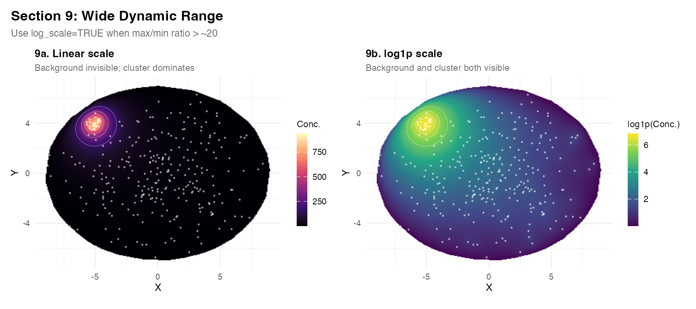
Section 10 – Two-gene ratio map
A log2(A/B) ratio map shows spatial domains of
ligand/receptor balance.
ph <- list(D = 1, lambda = 0.25, production_rate = 1,
method = "fd", fd_solver = "direct",
grid_resolution = 256L, verbose = FALSE)
res_gA <- do.call(estimate_concentration_field,
c(list(mask = tissue_mask, transcript_coords = tc_A), ph))
res_gB <- do.call(estimate_concentration_field,
c(list(mask = tissue_mask, transcript_coords = tc_B), ph))
res_rt <- res_gA
res_rt$field <- log2((res_gA$field + 1e-6) / (res_gB$field + 1e-6))
p_ratio <- plot_field(res_rt,
title = "10c. log2(A/B) ratio",
subtitle = "Red=A territory | Blue=B territory | White=balanced",
symmetric = TRUE, show_contours = TRUE, n_contours = 5,
show_pts = FALSE, fill_label = "log2(A/B)") +
geom_point(data = tc_A, aes(x = x, y = y),
color = "#e74c3c", size = 0.3, alpha = 0.4,
inherit.aes = FALSE) +
geom_point(data = tc_B, aes(x = x, y = y),
color = "#27ae60", size = 0.3, alpha = 0.4,
inherit.aes = FALSE)
p_dens <- ggplot(field_to_df(res_rt), aes(x = field,
fill = ifelse(field < 0, "B dominant", "A dominant"))) +
geom_density(alpha = 0.55) +
geom_vline(xintercept = 0, linetype = "dashed", color = "grey40") +
scale_fill_manual(values = c("B dominant" = "#2980b9",
"A dominant" = "#c0392b"), name = NULL) +
labs(title = "10d. Distribution of log2(A/B)",
subtitle = "Fraction of tissue in each territory",
x = "log2(A/B)", y = "Density") +
theme_demo()
(plot_field(res_gA, tc_A, title = "10a. Gene A field") +
plot_field(res_gB, tc_B, title = "10b. Gene B field", palette = "viridis")) /
(p_ratio + p_dens) +
plot_annotation(
title = "Section 10: Two-Gene Ratio Map",
theme = theme(plot.title = element_text(face = "bold", size = 13)))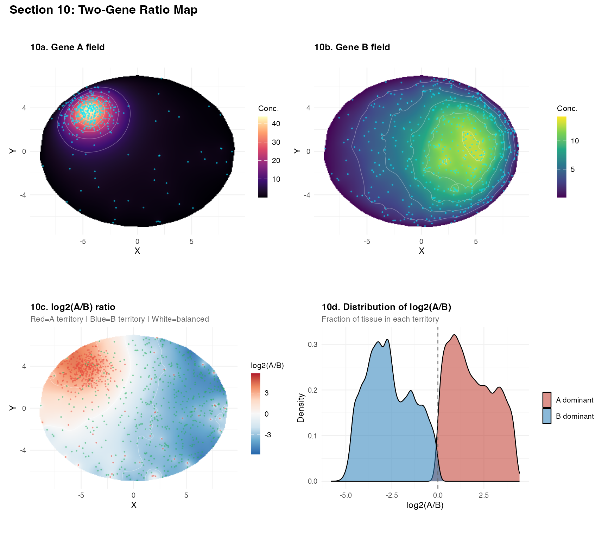
Section 11 – 100k transcripts and solver timing
tc_100k <- sample_in_mask(tissue_mask, 100000)
cat(sprintf("Sampled %d transcripts.\n", nrow(tc_100k)))## Sampled 100000 transcripts.
t1 <- system.time(r1 <- estimate_concentration_field(
mask = tissue_mask, transcript_coords = tc_100k,
D = 1, lambda = 0.3, method = "fd", fd_solver = "direct",
grid_resolution = 256L, verbose = TRUE))## ============================================================
## estimate_concentration_field
## ============================================================
## Method: fd | D: 1 | lambda: 0.3 | L: 1.82574 | N: 256 x 256
## BC: dirichlet | solver: direct
## ------------------------------------------------------------
## Transcripts: 100000 used (0 external excluded)
## Rasterizing 256x256 grid...
## Inside-mask cells: 45594 (69.6%)
## Sparse system: 45594x45594, 227002 nnz
## Solve: 0.75s | Total: 1.27s | Range: [23.11, 1596]
## ============================================================
t2 <- system.time(r2 <- estimate_concentration_field(
mask = tissue_mask, transcript_coords = tc_100k,
D = 1, lambda = 0.3, method = "fd", fd_solver = "iterative",
sor_omega = 1.75, grid_resolution = 256L, verbose = TRUE))## ============================================================
## estimate_concentration_field
## ============================================================
## Method: fd | D: 1 | lambda: 0.3 | L: 1.82574 | N: 256 x 256
## BC: dirichlet | solver: iterative
## ------------------------------------------------------------
## Transcripts: 100000 used (0 external excluded)
## Rasterizing 256x256 grid...
## Inside-mask cells: 45594 (69.6%)## Solve: 6.05s | Total: 6.57s | Range: [23.11, 1596]
## ============================================================
t3 <- system.time(r3 <- estimate_concentration_field(
mask = tissue_mask, transcript_coords = tc_100k,
D = 1, lambda = 0.3, method = "green",
grid_resolution = 256L, verbose = TRUE))## ============================================================
## estimate_concentration_field
## ============================================================
## Method: green | D: 1 | lambda: 0.3 | L: 1.82574 | N: 256 x 256
## ------------------------------------------------------------
## Transcripts: 100000 used (0 external excluded)
## Rasterizing 256x256 grid...
## Inside-mask cells: 45594 (69.6%)
## Solve: 0.08s | Total: 0.62s | Range: [701.5, 1651]
## ============================================================
knitr::kable(data.frame(
Solver = c("fd/direct (N=256)", "fd/SOR (N=256)", "green/FFT (N=256)"),
Time_s = round(c(t1["elapsed"], t2["elapsed"], t3["elapsed"]), 2),
Has_BCs = c("Yes", "Yes (Dirichlet only)", "No"),
Handles_holes = c("Yes", "Yes", "No"),
Notes = c("Sparse LU; recommended up to N=400",
"Iterative; use for N > 400",
"Fastest; infinite domain only")
))| Solver | Time_s | Has_BCs | Handles_holes | Notes |
|---|---|---|---|---|
| fd/direct (N=256) | 1.27 | Yes | Yes | Sparse LU; recommended up to N=400 |
| fd/SOR (N=256) | 6.57 | Yes (Dirichlet only) | Yes | Iterative; use for N > 400 |
| green/FFT (N=256) | 0.62 | No | No | Fastest; infinite domain only |
sub <- tc_100k[sample(nrow(tc_100k), 2000), ]
plot_field(r1, sub,
title = sprintf("11a. fd/direct (%.1f s)", t1["elapsed"]),
subtitle = "N=256 | sparse LU",
pt_size = 0.15, pt_alpha = 0.2) +
plot_field(r2, sub,
title = sprintf("11b. fd/SOR (%.1f s)", t2["elapsed"]),
subtitle = "N=256 | iterative",
palette = "plasma", pt_size = 0.15, pt_alpha = 0.2) +
plot_annotation(
title = "Section 11: 100k Transcripts -- Solver Comparison",
subtitle = "2,000 of 100,000 points shown",
theme = theme(plot.title = element_text(face = "bold", size = 13),
plot.subtitle = element_text(size = 9, color = "grey40")))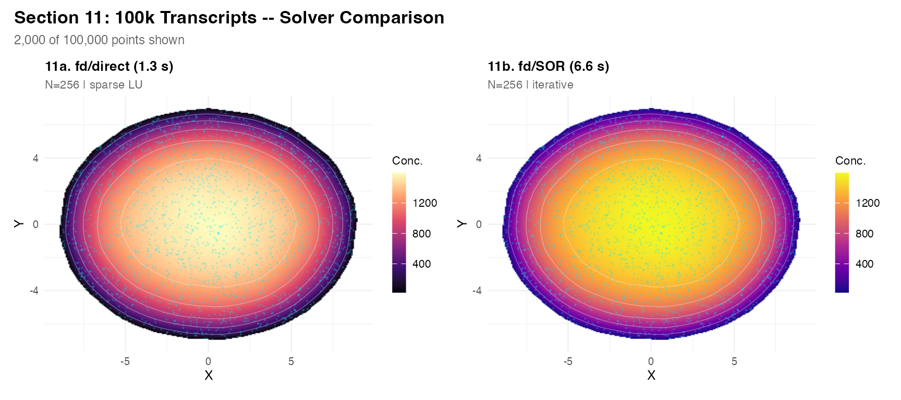
Section 12 – Quantitative field extraction
res_q <- res_fd
interpolate_field <- function(result, query_pts) {
xg <- result$x; yg <- result$y; f <- result$field
vapply(seq_len(nrow(query_pts)), function(i) {
qx <- query_pts$x[i]; qy <- query_pts$y[i]
xi <- findInterval(qx, xg); yi <- findInterval(qy, yg)
if (xi < 1 || xi >= length(xg) || yi < 1 || yi >= length(yg))
return(NA_real_)
wx <- (qx - xg[xi]) / (xg[xi+1] - xg[xi])
wy <- (qy - yg[yi]) / (yg[yi+1] - yg[yi])
(1-wx)*(1-wy)*f[xi,yi] + wx*(1-wy)*f[xi+1,yi] +
(1-wx)*wy *f[xi,yi+1] + wx*wy *f[xi+1,yi+1]
}, numeric(1))
}
queries <- data.frame(
label = c("Cluster core", "Cluster edge", "Tissue centre",
"Far right", "Near notch"),
x = c(-4.5, -3.0, 0.0, 5.0, 3.0),
y = c( 3.8, 2.5, 0.0, 0.0, 0.0))
queries$concentration <- interpolate_field(res_q, queries)
knitr::kable(queries, digits = 5)| label | x | y | concentration |
|---|---|---|---|
| Cluster core | -4.5 | 3.8 | 40.94720 |
| Cluster edge | -3.0 | 2.5 | 21.12701 |
| Tissue centre | 0.0 | 0.0 | 2.15650 |
| Far right | 5.0 | 0.0 | 0.75415 |
| Near notch | 3.0 | 0.0 | 0.97991 |
df_q <- field_to_df(res_q)
cat(sprintf("Mean concentration:\n Left half (x < 0): %.5f\n Right half (x >= 0): %.5f\n",
mean(df_q$field[df_q$x < 0 & !is.na(df_q$field)]),
mean(df_q$field[df_q$x >= 0 & !is.na(df_q$field)])))## Mean concentration:
## Left half (x < 0): 6.73849
## Right half (x >= 0): 0.80629
pk <- which.max(res_q$field)
N <- length(res_q$x)
cat(sprintf("\nPeak: x=%.2f, y=%.2f, value=%.6f\n",
res_q$x[((pk-1L) %% N) + 1L],
res_q$y[((pk-1L) %/% N) + 1L],
res_q$field[pk]))##
## Peak: x=-4.25, y=3.86, value=41.440719
total <- sum(res_q$field[res_q$mask], na.rm = TRUE) * res_q$hx * res_q$hy
theory <- nrow(tc_A) * 1.0 / 0.3
cat(sprintf("\nField integral: %.4f\nTheory (n * r / lambda): %.4f\nAgreement: %.1f%%\n",
total, theory, 100 * (1 - abs(total - theory) / theory)))##
## Field integral: 737.6707
## Theory (n * r / lambda): 1300.0000
## Agreement: 56.7%
prof <- df_q[abs(df_q$y) < res_q$hy * 1.5 & !is.na(df_q$field), ]
ggplot(prof[order(prof$x), ], aes(x = x, y = field)) +
geom_line(color = "#e74c3c", linewidth = 0.8) +
geom_area(fill = "#e74c3c", alpha = 0.15) +
geom_vline(xintercept = 0, linetype = "dashed", color = "grey50") +
labs(title = "12e. Concentration profile along y = 0",
subtitle = "Cluster peak at x ~ -4.5; near-zero at right edge",
x = "X", y = "Concentration") +
theme_demo()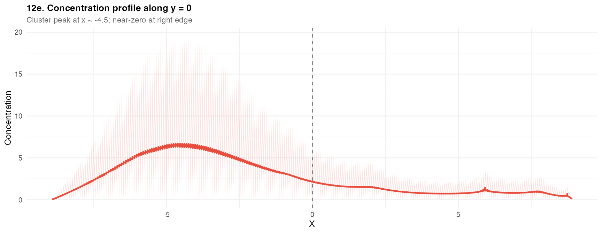
Parameter quick-reference
estimate_concentration_field() -- parameter guide
--------------------------------------------------------------------
PHYSICS
diffusion_length Primary tuning knob. Set directly: L = 0.5 to 10
Rule: L ~ 10-20% of inter-cluster distance
D Affects amplitude only (amplitude proportional to 1/D)
lambda Affects amplitude only; lambda = D / L^2
production_rate Global amplitude scaling; use weight_col for per-cell
SOLVER
method = "fd" Default. Use whenever you need accurate BCs or holes.
method = "green" Faster for sweeps; ignores domain shape.
method = "kde" Quick baseline; no physics.
fd_solver = "direct" N <= 400 (sparse LU decomposition)
fd_solver = "iterative" N > 400 (red-black SOR)
boundary_condition = "dirichlet" C=0 at boundary. Default.
boundary_condition = "neumann" dC/dn=0. Sealed system.
grid_resolution = 256 Explore. 512 for publication quality.
WEIGHTS
weight_col = "umi" Use UMI counts as source strength.
POST-PROCESSING
log_transform = TRUE Apply log1p() after solving.
normalize = TRUE Rescale to [0,1] for comparison.
clip_negative = TRUE Remove small numerical negatives. Default on.
--------------------------------------------------------------------Session information
## R version 4.5.2 (2025-10-31)
## Platform: aarch64-apple-darwin20
## Running under: macOS Sonoma 14.6.1
##
## Matrix products: default
## BLAS: /System/Library/Frameworks/Accelerate.framework/Versions/A/Frameworks/vecLib.framework/Versions/A/libBLAS.dylib
## LAPACK: /Library/Frameworks/R.framework/Versions/4.5-arm64/Resources/lib/libRlapack.dylib; LAPACK version 3.12.1
##
## locale:
## [1] en_US/en_US/en_US/C/en_US/en_US
##
## time zone: America/New_York
## tzcode source: internal
##
## attached base packages:
## [1] stats graphics grDevices utils datasets methods base
##
## other attached packages:
## [1] patchwork_1.3.2 ggplot2_4.0.1 sf_1.0-21 TissueField_0.1.0
##
## loaded via a namespace (and not attached):
## [1] sass_0.4.10 generics_0.1.4 class_7.3-23 KernSmooth_2.23-26
## [5] lattice_0.22-7 digest_0.6.39 magrittr_2.0.4 evaluate_1.0.5
## [9] grid_4.5.2 RColorBrewer_1.1-3 fastmap_1.2.0 Matrix_1.7-4
## [13] jsonlite_2.0.0 e1071_1.7-16 DBI_1.2.3 viridisLite_0.4.2
## [17] scales_1.4.0 isoband_0.3.0 textshaping_1.0.1 jquerylib_0.1.4
## [21] cli_3.6.5 rlang_1.1.7 units_0.8-7 withr_3.0.2
## [25] cachem_1.1.0 yaml_2.3.12 otel_0.2.0 tools_4.5.2
## [29] dplyr_1.1.4 vctrs_0.7.1 R6_2.6.1 proxy_0.4-27
## [33] lifecycle_1.0.5 classInt_0.4-11 fs_1.6.6 htmlwidgets_1.6.4
## [37] ragg_1.4.0 pkgconfig_2.0.3 desc_1.4.3 pkgdown_2.1.3
## [41] bslib_0.10.0 pillar_1.11.1 gtable_0.3.6 glue_1.8.0
## [45] Rcpp_1.1.1 systemfonts_1.2.3 xfun_0.56 tibble_3.3.1
## [49] tidyselect_1.2.1 knitr_1.51 dichromat_2.0-0.1 farver_2.1.2
## [53] htmltools_0.5.9 rmarkdown_2.30 labeling_0.4.3 compiler_4.5.2
## [57] S7_0.2.1